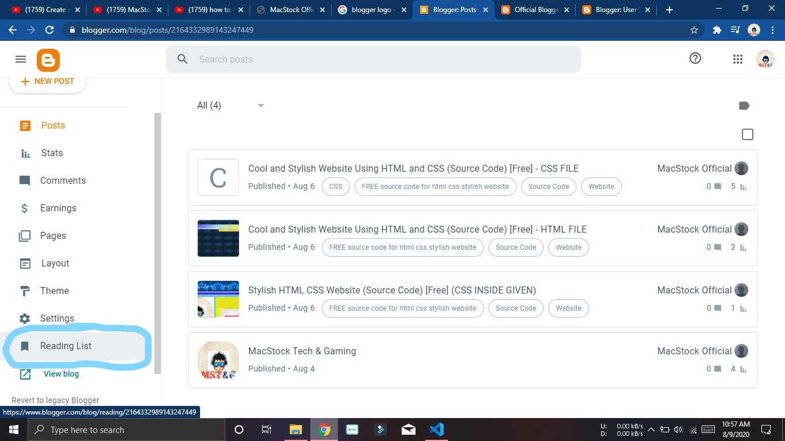
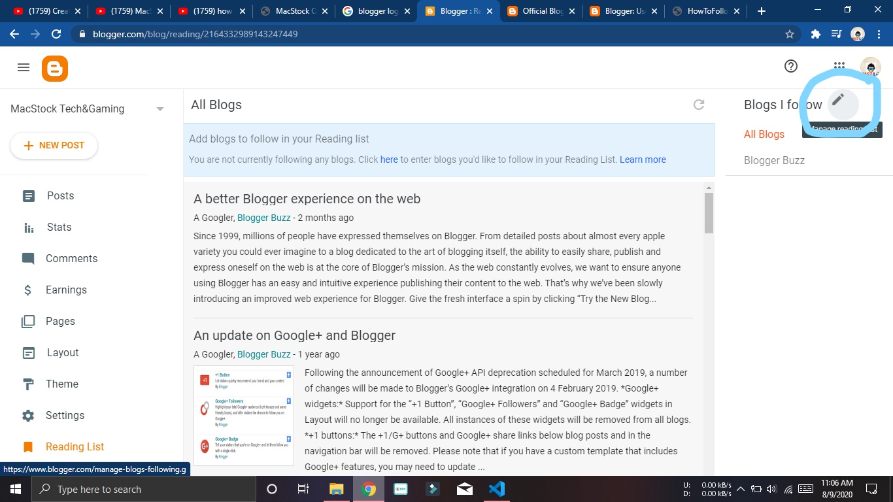
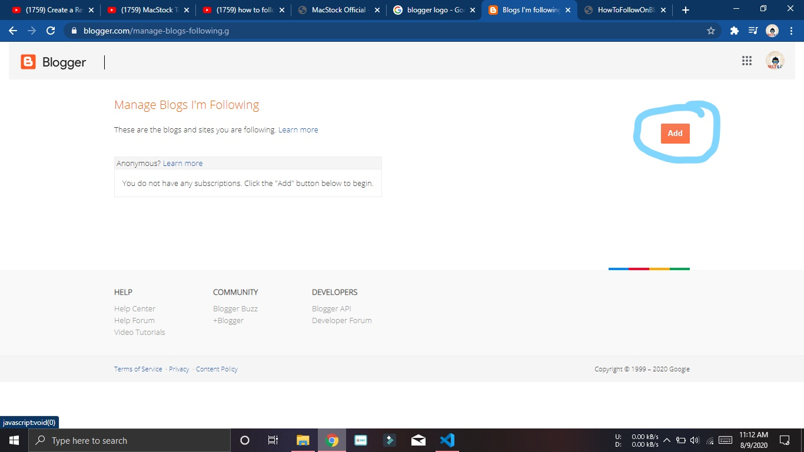
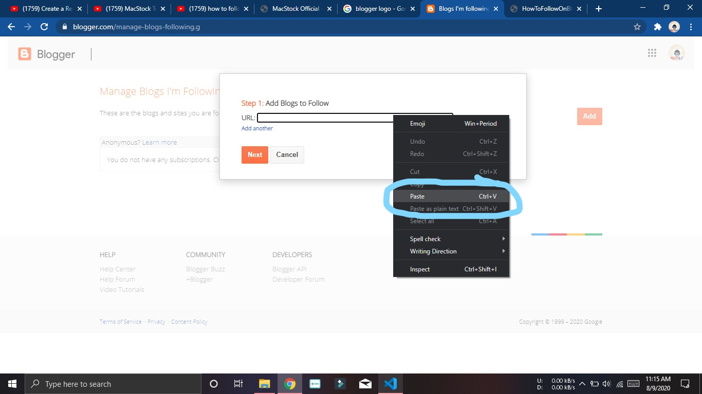
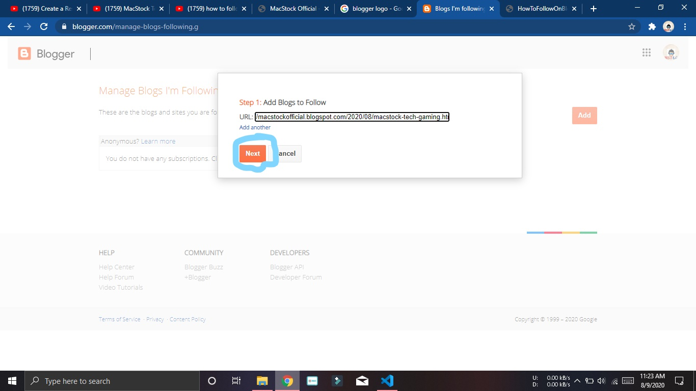

First : SetUp Your Blogger Account, If you didn't did yet then Click on the SIGN UP Button Given Below
Sign Up/Log In
After Sign Up or Log in to Blogger, Do the Following Steps
Step1 : Click the READING LIST button as shown in the Image

Step 2: Click the Little PENCIL button on the up-right corner

Step 3: Click the Orange ADD button on the middle right of the page

Step 4: Copy the Given Link and Paste it into the URL section(Press Mouse Right Click button to open the dialog box) (For Copying Select the Link and Press Mouse right click and press copy)
Link : https://macstockofficial.blogspot.com/2020/08/macstock-tech-gaming.html

Step 5: After doing this, Press the Next Button

Well done, You have Successfully Followed my Blogger Page, Now you will all notifications about my latest content on Blogger